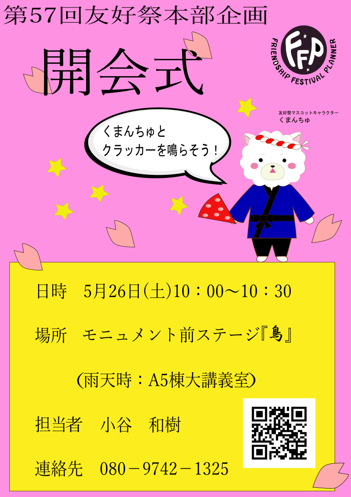
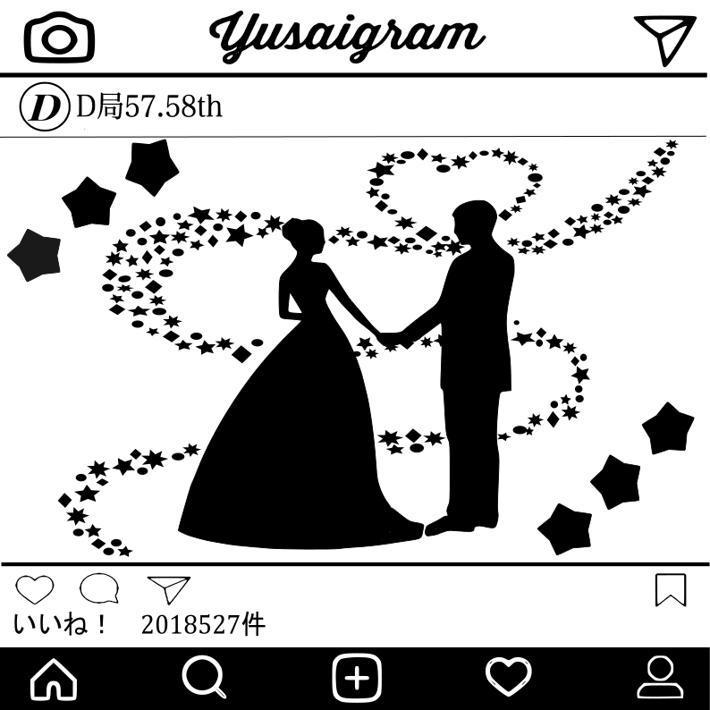

あのダンスの祭典がやってきた！
大学ダンサー達が披露する最高のダンスが忘れられない感動をあなたに！！！
開催日時 （友好祭1日目）5月26日（土）
開場 18:00 開演 18:30 閉演 20:30
開催場所 中百舌鳥キャンパスC2棟（体育館）
券売場所 前売券 500円・・・B12棟（学生会館）b209 大学祭実行委員会本部
当日券 800円・・・C2棟（体育館）前案内所
担当者名、担当者連絡先
担当者：徐 承赫
連絡先：dancecollection2018@gmail.com
今年は人気芸人6組が友好祭にやってくる！熱い漫才を見逃すな！
《出演者》スーパーマラドーナ、金属バット、ヘンダーソン、トット、ネイビーズアフロ、霜降り明星
◎日時 : 友好祭2日目、5月27日(日) 開場15:00 開演15:30
◎場所 : 大阪府立大学 中百舌鳥キャンパスC5棟(学術情報センター)Uホール白鷺
◎チケット :
【学内価格】 800円 (4/9より販売)大阪府立大学 中百舌鳥キャンパスB12棟(学生会館)b209大学祭実行委員会本部にて販売！11:00～20:00(土日祝は除く)
※大阪府立大学の学生でない方も学内価格にて購入いただけます。
【学外価格】 1000円 (5/7より販売)イープラスにて発売
イープラス: http://eplus.jp/
※座席は全席指定です。
※4歳以上有料、4歳未満入場不可です。
ご不明な点がございましたら友好祭本部までお問い合わせください。
【友好祭本部連絡先】072-254-9987
担当者 : 井谷 公亮
連絡先 : 090-8653-4039
様々なゲームで楽しめ、ビンゴ大会では夢の国へ行くチャンスも！？
後夜祭ならではの演出を楽しんでください！
日時場所
5月27日 17:10～20:25
中百舌鳥キャンパス B12棟 学生会館前ステージ『』
雨天時 同時刻開催 A5棟 大講義室
担当者 佐藤颯太
連絡先 090-8448-9004
友好祭のはじまりは開会式から！！
開会式には全国学園祭マスコット総選挙で見事三位に輝いた
くまんちゅが出席します！
最後には皆さんでクラッカーを鳴らします！
くまんちゅと一緒に友好祭のはじまりを盛り上げましょう！！！
日時・場所
5月26日(土)10:00～10:30
モニュメント前ステージ『』
(雨天時：A5棟大講義室)
担当者・連絡先
小谷 和樹
080-9742-1325

ちびっこだけでも、親子でも、誰でも参加できる屋外のゲーム企画！
みんなでゲームに参加して景品をゲットしよう！
参加者全員に風船もプレゼントするよ！
日時・場所
5月26日(土)13:55～14:55
C1棟前ステージ『 』
』
(雨天中止)
担当者 川添美智
crystalbearsbg@yahoo.co.jp
卵をモチーフにしたクイズやゲームをします！イベントに参加してくれる人を募集しています！
景品もあるので是非お越しください！
日時場所
・晴天時
5/26（土）14:20～15:30
大阪府立大学中百舌鳥キャンパスA5棟前ステージ『』
・雨天時
5/26（土）14:45～15:55
大阪府立大学中百舌鳥キャンパスB12棟（学生会館）大集会室
担当者・担当者連絡先
辻井智希
t.tmk0018@gmail.com
ここはリズム王国。ある日お姫様が悪者によってさらわれてしまった…！
リズムにノって様々な試練を切り抜けよう！
果たして音楽とリズムの力でお姫様を救い出すことはできるのか？
無事救い出せたらお姫様からいいものが貰えるかも…！？
開催日時 : 5月26日(土) 12:45～14:00
開催場所 : モニュメント前ステージ『』
（雨天時はA5棟大講義室にて同時刻開催）
大人から子供まで、音楽に合わせて体を動かして楽しもう！
さぁ！勇者になってお姫様を救い出せ！！！
◯担当者名・連絡先
担当者 : 桑原太輝
連絡先 : 09042919120
府大No.1の模擬店を決めるグランプリを今年も開催！模擬店がもっとわかるクイズステージやアピールタイムも！
あなたの1票がグランプリを決める！
日時・場所
ステージ企画
5月26日(土)10:30～11:40
アピールタイム
5月26日(土)11:45～12:00(前半)
5月27日(日)11:10～11:40(後半)
C1棟前ステージ『 』
』
※雨天時 模擬店が中止になった場合のみ中止
担当者・連絡先
金山 洸介
mogigura57@gmail.com
植物工場研究センターとは、蛍光灯やLEDを用いた完全人工光型植物工場に特化した国内最大規模の研究施設です。
レタス(「府大マルシェ」)等を生産する様子をご見学頂きます。
＊日時・場所
・5月26日（土)
1回目 13:30～14:30（集合13:00)
2回目 15:15～16:15（集合14:45）
・企画場所 C20、21、22棟
集合場所 B15棟 シエル
参加には事前予約が必要です!! お申し込みは下記のリンクからできます!!
「植物工場見学会 参加申込フォーム」↓
申し込みはこちらから。
また、植物工場で生産されたレタスの販売もございます!!
ぜひ、この機会にお越しください!!
担当者：野村 明日香
担当者連絡先：
090-6323-5276
yu.openlab@gmail.com
事前に2人1組のチームを3チーム募集して音楽に関するゲームで対決してもらいます！
参加者全員に景品、優勝チームには豪華景品があるのでぜひ参加してください！
日時場所
5月27日(日)12時05分～13時05分
モニュメント前ステージ『』
興味をお持ちの方は
fukui0915@ezweb.ne.jp
こちらまで連絡してください
担当者 担当者連絡先
福井 蒼太
fukui0915@ezweb.ne.jp
府大の部活・サークルから選ばれた男女ペアで行われるミスコン！
府大の美男美女を見に来ませんか？投票もするのでぜひ来てください!!
日時・場所
（晴）学館前ステージ『』
昼ミスコン 12:10～13:50
後夜ミスコン 17:35～17:50
19:00～19:15
（雨）A5棟大講義室
昼ミスコン 14:40～15:20
後夜ミスコン 晴天時と同じ
担当者・担当者連絡先
西田龍平 090-7967-8375

握力や長座体前屈の他に骨密度や周辺視野などを楽しく測定することができます。
みなさん一緒にBodyをCheckしましょう！！
日時・場所
5月26日(土)10:00～18:00 (17:30受付終了)
5月27日(日)10:00～15:30 (15:00受付終了)
A5棟103講義室
担当者・連絡先
浅井 彩音
iop.bp.yi.0812@ezweb.ne.jp
「青空」をテーマにしたカフェです！歩き疲れたそこのあなた！！
無料のドリンクと落ち着く空間でひと休みしていきませんか？
日時・場所
5月26日(土)・27日(日)
両日10:00～16:00
B1棟第2講義室
担当者・連絡先
青木さくら
bom2saku1love@gmail.com
友好祭を襲おうとする悪者が現れた！フレンジャーは友好祭の平和を取り戻せるのか！？
ショーの後にはフレンジャーと写真を撮ろう！
日時
5月26日(土)12:00～12:30
5月27日(日)13:20～13:50
※雨天時(1日目のみ)13:00～13:30
場所
モニュメント前ステージ『 』
』
※雨天時 B12棟大集会室
担当者・連絡先
奥村 圭太
090-6322-4053
友好学園謎解き部は、さらなる部の発展のために、新しい部員を募集している。
さまざまな謎を突破し、全国屈指の名門友好学園謎解き部に入部せよ！！！
日時・場所
5月26日 10:00～18:00(受付終了17:00)
5月27日 10:00～16:00(受付終了15:00)
B1棟第一講義室
協力
OPU Records
担当者・連絡先
狭間 祐至
hazayan@gmail.com
こども牧場では、たくさんの動物たちと6つのゲームを楽しむことができるよ！
お母さんやお友だちと一緒に牧場に遊びに行こう！
日時・場所
5月26日(土) 10:00～18:00 (17:30受付終了)
5月27日(日) 10:00～16:00 (15:30受付終了)
A5棟104講義室
担当者・連絡先
梶 江里菜
090-6323-2134
ここユウサイ島には大昔に隠された宝が眠っているという伝説がある！
会場内を歩きまわってなぞを解きあかし、お宝をみつけよう！
日時
5月26日(土)10:30～17:40
(開始時刻 10:30～11:40 12:00～13:10 13:30～14:40 15:00～16:10 16:30～17:40)
5月27日(日)10:30～16:10
(開始時刻 10:30～11:40 12:00～13:10 13:30～14:40 15:00～16:10)
場所
A2棟跡地 ※雨天時も同様
担当者・連絡先
辻田 有希菜
080-4823-1206
わんぱくで育ち盛りの子供たちのための遊び場をご用意しました！
ストラックアウトや巨大迷路など楽しさいっぱい！！
日時・場所
5月26日(土) 10:00～18:00
5月27日(日) 10:00～16:00
A2棟跡地
※雨天時中止
担当者・連絡先
清水 一幸
090-6557-5131
友好祭OpenLab企画では、大阪府立大学の研究室が見ることや、どんな研究をしているのかを知ることができます！
展示、講義、体験型企画など様々な企画がございますので、お気軽にお立ち寄りください。
＊日時・場所
5月26日(土)・27日(日)
中百舌鳥キャンパス構内
より詳しい企画については，こちらから！ クリックしてみてね。↑↑↑